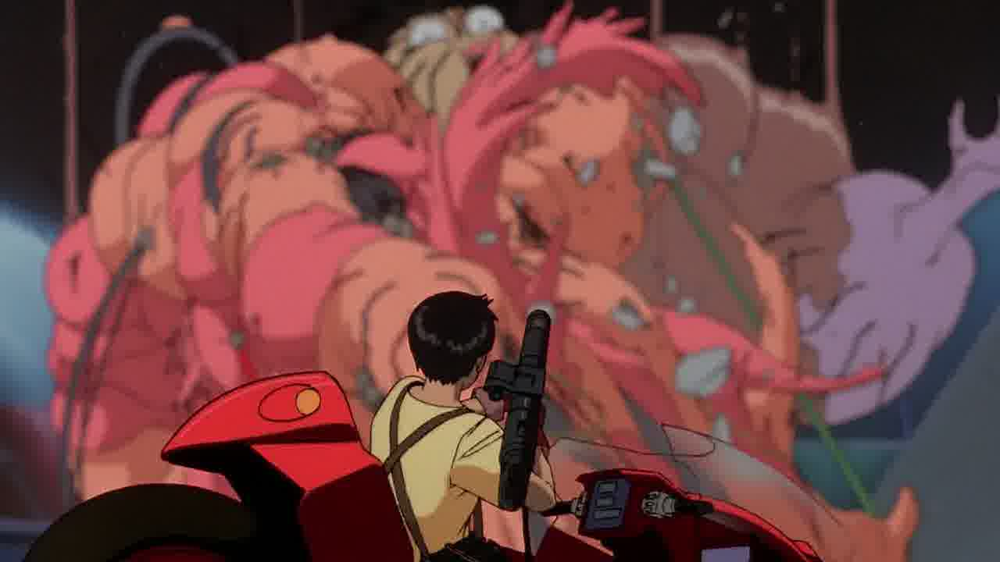

Few films, let alone any anime, are held in such high regard as 1988's "Akira." A classic film of love, loss, power, corruption, and tragedy and hope. And if you watch it today for the first time, you'll think: huh? Set decades into an alternate future, generations after World War III was unleashed, Neo Tokyo thrives as a harsh, grimy metropolis. A biker gang made up of high-school kids are out one night when they come across a strange, blue, shriveled boy, at which point an army comes to collect him and one of the gang, named Tetsuyo. We learn that Tetsuyo is experimented upon, and given incredible powers, but due to his past he uses those powers for destruction. It's up to Kamida and the army to stop him at any means, before he inadvertently brings the rapture upon everyone. This doesn't explain the plot very well. It makes more sense to say this is like what would happen if you gave a random kid on the street the powers of a Dragonball Z character. Then drugs. Not the good kind of drugs, but the kind that send you on a bad trip that'll give you nightmares. Tetsuyo starts hallucinating early during the experiments, but as his powers grow, the differences between dreams and reality diminish. He kills people, morphs things into abnormal creations, and this all comes to one of the most disturbing films I've seen. Maybe not, compared to more recent anime, but at the time this was released, it's easy to see why this got so much attention. I can't tell if the movie is actually good or not. Should it be seen? Absolutely. But somehow, the story doesn't hold well in the editing, and some would just get lost or confused. In fact, this is the sort of film that could alienate many people into thinking anime is too weird to enjoy. There are moments of brilliance here: a few scenes are expertly directed, and the tragic elements are reminiscent of Shakespeare. But at the same time, everything has about the same depth and emotion as a "DragonBall Z" or "Naruto" episode, even though it obviously tries to be much more.  Visually, it's clear this cost a lot of money to make. I don't think I've ever seen an anime with this many animated frames of animation, even today, making it rival even Walt Disney's quality. Whether or not you actually like the character designs or the style, it's easy to appreciate. I personally didn't think the character designs held up well, but the world itself looks good. The pulsating monsters are a great (and gross) show of imagination, and are the main reason why the movie is still talked about today. Audio consists of primal drum beats that it is now famous for, with some futuristic beats thrown for the setting. The recent English dub I watched it in is fair, about as good as it could be given the script. I hear that Hollywood was considering making a live-action adaption of "Akira." I'm opposed to it, because more so than any other anime, this would not adapt well to a film for North American audiences, no matter how much of a "classic" it is. I don't know if anything of the plot could be salvaged for a improved remake, and so I recommend that anime fans see this film, then put it to the side and move on. Your mind may explode trying to decide if it's good or not, but it's at least worth watching.
- "Ani" More reviews can be found at : https://2danicritic.github.io/ Previous review: review_Afro_Samurai_-_Resurrection Next review: review_Aladdin